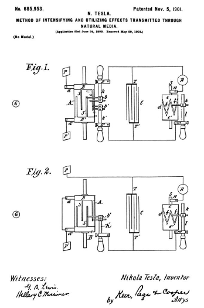

Descarga la patente original en esté enlace


Que se sepa que yo, NIKOLA TESLA , ciudadano de los Estados Unidos, que reside en Nueva York, en el condado y en el estado de Nueva York, he inventado una nueva y útil Mejora en los métodos para intensificar y utilizar los efectos transmitidos a través de la naturaleza. Medios, del que se detalla a continuación, haciendo referencia a los dibujos adjuntos, que forman parte del mismo.
El objeto de mi presente invención es una mejora en la técnica de utilizar efectos transmitidos a distancia a un dispositivo receptor a través de los medios naturales; y consiste en un método novedoso mediante el cual se pueden conseguir resultados hasta ahora inalcanzables.
Se conocen ahora varias formas o métodos de transmitir perturbaciones eléctricas a través de los medios naturales y utilizarlos para hacer funcionar receptores distantes y se han aplicado con más o menos éxito para lograr una variedad de resultados útiles. Una de estas formas consiste en producir mediante un aparato adecuado rayos o radiaciones es decir, perturbaciones— que se propagan en línea recta por el espacio, dirigiéndolos sobre un aparato receptor o registrador a distancia, y así poner en funcionamiento este último. Este método es el más antiguo y el más conocido y ha cobrado especial importancia en los últimos años gracias a las investigaciones de Heinrich Hertz. Otro método consiste en hacer pasar una corriente a través de un circuito, preferiblemente uno que encierre un área muy grande, induciendo así en un circuito similar situado a distancia otra corriente y afectando por la misma de cualquier forma conveniente a un dispositivo receptor. Otra forma más, que también se conoce desde hace muchos años, es hacer pasar de cualquier manera adecuada una corriente a través de una parte del suelo, conectando dos puntos del mismo, preferiblemente a una distancia considerable entre sí, los dos terminales de un generador y para energizar mediante una parte de la corriente difundida a través de la tierra un circuito distante que está dispuesto de manera similar y conectado a tierra en dos puntos muy separados y que está hecho para actuar sobre un receptor sensible. Estos diversos métodos tienen sus limitaciones, una en especial, que es común a todos, es que el circuito o instrumento receptor debe mantenerse en una posición definida con respecto al aparato transmisor.
En varias solicitudes presentadas por mí y patentes otorgadas a mí, he revelado otros métodos para lograr resultados de esta naturaleza, que pueden describirse brevemente de la siguiente manera: En un sistema, el potencial de un punto o región de la tierra se varía al impartirle Electrificaciones intermitentes o alternas a través de uno de los terminales de una fuente adecuada de perturbaciones eléctricas que, para realzar el efecto, tiene su otro terminal conectado a un cuerpo aislado, preferiblemente de gran superficie y en elevación. Las electrificaciones comunicadas a tierra se extienden en todas direcciones a través de la misma, llegando a un circuito distante que generalmente tiene sus terminales dispuestos y conectados de manera similar a los de la fuente transmisora y opera sobre un receptor de alta sensibilidad. Otro método se basa en el hecho de que el aire atmosférico que se comporta como un excelente aislante de las corrientes generadas por los aparatos ordinarios se convierte en un conductor bajo la influencia de corrientes o impulsos de fuerza electromotriz enormemente alta que he ideado medios para generar. Por tales medios, los estratos de aire, que son fácilmente accesibles, están disponibles para la producción de muchos efectos deseados a distancias, por grandes que sean. Este método, además, permite aprovechar muchas de las mejoras que son practicables en los sistemas ordinarios de transmisión que implican el uso de un conductor metálico. Por tales medios, los estratos de aire, que son fácilmente accesibles, están disponibles para la producción de muchos efectos deseados a distancias, por grandes que sean. Este método, además, permite aprovechar muchas de las mejoras que son practicables en los sistemas ordinarios de transmisión que implican el uso de un conductor metálico. Por tales medios, los estratos de aire, que son fácilmente accesibles, están disponibles para la producción de muchos efectos deseados a distancias, por grandes que sean. Este método, además, permite aprovechar muchas de las mejoras que son practicables en los sistemas ordinarios de transmisión que implican el uso de un conductor metálico.
Obviamente, cualquiera que sea el método que se emplee, es deseable que las perturbaciones producidas por el aparato transmisor sean lo más potentes posible, y mediante el uso de ciertas formas de aparatos de alta frecuencia que he ideado y que ahora son bien conocidas, se encuentran importantes ventajas prácticas en este respeto asegurado. Además, dado que en la mayoría de los casos la cantidad de energía transportada al circuito distante no es más que una fracción diminuta de la energía total que emana de la fuente, es necesario para obtener los mejores resultados que cualquiera que sea el carácter del receptor y la naturaleza del la mayor cantidad posible de perturbaciones de la energía transportada debería estar disponible para el funcionamiento del receptor, y con este objeto en vista, hasta ahora, entre otros medios, he empleado un circuito de recepción de alta autoinducción y muy pequeña resistencia y de un período tal que vibre en sincronismo con las perturbaciones, por lo que una serie de impulsos separados de la fuente fueron hecho para cooperar, magnificando así el efecto ejercido sobre y asegurando la acción del dispositivo receptor. Por estos medios se han asegurado ventajas decididas en muchos casos; pero muy a menudo la mejora no es aplicable en absoluto o, de ser así, la ganancia es muy leve. Evidentemente cuando la fuente es una que produce una presión continua o que entrega impulsos de larga duración, es impracticable magnificar los efectos de esta manera y cuando, por otro lado, es una que proporciona impulsos cortos de extrema rapidez de sucesión, la ventaja obtenida de esta manera es insignificante, debido a la radiación y el inevitable desgaste por fricción en el circuito receptor. Estas pérdidas reducen en gran medida tanto la intensidad como el número de impulsos cooperativos, y dado que la intensidad inicial de cada uno de estos está necesariamente limitada, sólo queda disponible una cantidad insignificante de energía para una sola operación del receptor. Como esta cantidad depende en consecuencia de la energía transmitida al receptor por un solo impulso, es evidentemente necesario emplear un transmisor muy grande y costoso, y por lo tanto objetable, o bien recurrir al uso igualmente objetable de un dispositivo receptor demasiado delicado. y demasiado fácilmente trastornado. Es más, superar estas y otras limitaciones y desventajas que han existido hasta ahora en tales sistemas de transmisión de señales o inteligencia es el principal objeto de mi presente invención, que comprende un método novedoso para lograr estos fines.
El método, enunciado brevemente, consiste en producir perturbaciones o efectos arbitrariamente variados o intermitentes, transmitiendo dichas perturbaciones o efectos a través de los medios naturales a una estación receptora distante, utilizando energía derivada de dichas perturbaciones o efectos en la estación receptora para cargar un condensador, y usando la energía potencial acumulada así obtenida para operar un dispositivo receptor.
Un aparato por medio del cual se puede practicar este método se ilustra en los dibujos adjuntos, en los cuales:
La figura 1 es una ilustración esquemática del aparato y la figura 2 es una forma o disposición modificada del mismo.
En la aplicación práctica de mi método, por lo general procedo de la siguiente manera: En dos puntos cualesquiera del medio de transmisión entre los cuales existe o puede obtenerse de cualquier manera a través de la acción de las perturbaciones o efectos que se van a investigar o utilizar una diferencia de potencial eléctrico de cualquier magnitud, dispongo dos placas o electrodos de modo que puedan cargarse de manera opuesta a través de tales efectos o perturbaciones, y conecto estos electrodos a los terminales de un condensador altamente aislado, generalmente de considerable capacidad. A los terminales del condensador también conecto el receptor para ser operado en serie con un dispositivo de construcción adecuada, que realiza la función de descargar periódicamente el condensador a través del receptor en y durante los intervalos de tiempo que mejor se adapten al propósito contemplado. . Este dispositivo puede consistir simplemente en dos electrodos estacionarios separados por una capa dieléctrica débil de un espesor mínimo o puede comprender terminales uno o más de los cuales son móviles y accionados por cualquier fuerza adecuada y están adaptados para ponerse y desconectarse entre sí. de cualquier manera conveniente. Ahora se verá fácilmente que si las perturbaciones de cualquier naturaleza que puedan ser causan que cantidades definidas de electricidad del mismo signo sean transportadas a cada una de las placas o electrodos antes mencionados, ya sea de forma continua o en intervalos de tiempo suficientemente largos, el condensador se cargará a un cierto potencial, y siendo así almacenada una cantidad adecuada de energía durante el tiempo determinado por el dispositivo que efectúa la descarga del condensador, el receptor será operado periódicamente por la energía eléctrica así acumulada; pero muy a menudo el carácter de los impulsos y las condiciones de su uso son tales que sin una provisión adicional no se acumularía suficiente energía potencial en el condensador para operar los dispositivos receptores. Este es el caso cuando, por ejemplo, cada una de las placas o terminales recibe electricidad de signo que cambia rápidamente o incluso cuando cada una recibe electricidad del mismo signo, pero solo durante períodos que son cortos en comparación con los intervalos que las separan.
Hay una serie de dispositivos bien conocidos, ya sea sin partes móviles o terminales o con elementos alternativos o rotados por la aplicación de una fuerza adecuada, que ofrecen un paso más fácil a los impulsos de un signo o dirección que a los del otro. , o permitir que solo impulsos de un tipo u orden de sucesión atraviesen un camino, y cualquiera de estos o dispositivos similares capaces de cumplir con los requisitos pueden usarse para llevar mi invención a la práctica. En los dibujos adjuntos se ilustra uno de estos dispositivos de construcción familiar que servirá para transmitir una comprensión clara de esta parte de mi invención y permitir que un experto en la técnica la aplique. Consiste en un cilindro A de material aislante,'Sobre la que soportar cepillos unos y un' , que están conectados, respectivamente, de la manera mostrada a las placas terminales P y P ' , por encima de referencia. De los anillos BB ' extender estrecho metálico segmentos s y s ' , que por la rotación del cilindro A se llevó alternativamente en contacto con dobles cepillos b y b 'llevado por y en contacto con los titulares de la realización de h y h ' , que son regulables longitudinalmente en los soportes metálicos D y D ', como se muestra. Estos últimos están conectados a los terminales T y T ' de un condensador C, y debe entenderse que son capaces de un desplazamiento angular, como los soportes de cepillo ordinarios. El objeto de la utilización de dos cepillos, como b y b 'en cada uno de los titulares de h y h ' es variar a voluntad la duración del contacto eléctrico de las placas P y P ' con los terminales T y T ' , a la que está conectado un circuito de recepción que incluye un receptor R y un dispositivo ddel tipo mencionado anteriormente, que realiza la tarea de cerrar el circuito receptor a intervalos de tiempo predeterminados y descargar la energía almacenada a través del receptor. En el presente caso, este dispositivo consta de un cilindro d , hecho en parte de material conductor y en parte de material aislante e y e ' , respectivamente, que se hace girar a la velocidad deseada por cualquier medio adecuado. La parte conductora e está en buena conexión eléctrica con el eje S y está provista de segmentos ahusados ff , sobre los cuales se desliza un cepillo k , apoyado en una varilla conductora l , capaz de ajuste longitudinal en un soporte metálico m. Otro cepillo n está dispuesto para apoyarse sobre el eje S, y se verá que siempre que uno de los segmentos f entra en contacto con el cepillo k el circuito, incluido el receptor R, se completa y el condensador se descarga a través del mismo. Mediante un ajuste de la velocidad de rotación del cilindro dy un desplazamiento del cepillo k a lo largo del cilindro, se puede hacer que el circuito se abra y se cierre en una sucesión rápida y permanezca abierto o cerrado durante los intervalos de tiempo que se desee. Las placas P y P 'a través del cual las electrificaciones se transportan a los cepillos una y una ', pueden estar a una distancia considerable entre sí y tanto en el suelo como en el aire, o uno en el suelo y el otro en el aire, preferiblemente a cierta altura, o pueden estar conectados a conductores que se extienden a cierta distancia o a los terminales de cualquier tipo de aparato que suministre energía eléctrica que se obtenga de la energía de los impulsos o perturbaciones transmitidos a distancia a través de los medios naturales.
Como ilustración del funcionamiento de los dispositivos descritos, supongamos que los impulsos eléctricos alternos de un generador distante, como G, se transmiten a través de la tierra y que se desea utilizar esos impulsos de acuerdo con mi método. Este puede ser el caso, por ejemplo, cuando dicho generador se utiliza con fines de señalización en una de las formas antes enumeradas, como por ejemplo, teniendo sus terminales conectados a dos puntos de la tierra distantes entre sí. En este caso, las placas P y P ' se conectan primero a dos puntos de la tierra seleccionados correctamente. La velocidad de rotación del cilindro A se varía hasta que se hace girar en sincronismo con los impulsos alternos del generador, y, por último, la posición de los cepillos b y b 'se ajusta por desplazamiento angular, como de costumbre, o de otras maneras, de modo que están en contacto con los segmentos de s y s 'durante los períodos en los que los impulsos están en el máximo o cerca del máximo de su intensidad. Solo se requieren habilidades y conocimientos eléctricos ordinarios para hacer estos ajustes, y se conocen bien varios dispositivos para efectuar el movimiento sincrónico, y siendo el objeto principal de mi presente solicitud establecer un método novedoso o utilizar o aplicar un principio, un No se considera necesaria una descripción detallada de tales dispositivos. Sin embargo, puedo afirmar que, a efectos prácticos, en el presente caso solo es necesario mover los cepillos hacia adelante o hacia atrás hasta que se obtenga el máximo efecto. Cumplidos los requisitos anteriores, las cargas eléctricas del mismo signo se transmitirán a cada uno de los terminales del condensador a medida que se gira el cilindro A, y con cada nuevo impulso, el condensador se cargará a un potencial más alto.d siendo ajustable a voluntad, la energía de cualquier número de impulsos separados puede acumularse en forma potencial y descargarse a través del receptor R cuando el cepillo k entra en contacto con uno de los segmentos f. Por supuesto, se entenderá que la capacidad del condensador debe ser tal que permita almacenar una cantidad de energía mucho mayor que la requerida para el funcionamiento normal del receptor. Dado que mediante este método se puede poner a disposición una cantidad relativamente grande de energía y en una forma adecuada para el funcionamiento de un receptor, este último no necesita ser muy sensible; pero, por supuesto, cuando los impulsos son muy débiles, como cuando vienen de una gran distancia o cuando se desea hacer funcionar un receptor muy rápidamente, entonces se puede utilizar en este sentido cualquiera de los dispositivos bien conocidos capaces de responder a influencias muy débiles.
Si en lugar de los impulsos alternantes impulsos cortos de la misma dirección se transportan a las placas P y P 'el aparato descrito puede todavía fácilmente ser utilizado, y para este propósito es meramente necesario desplazar los cepillos b y b ' en la posición de indicado por las líneas punteadas manteniendo las mismas condiciones en cuanto a sincronismo que antes, de modo que se permitirá que los impulsos sucesivos pasen al condensador, pero que no regresen al suelo o al medio de transmisión durante los intervalos entre ellos, debido a la interrupción durante tales intervalos de las conexiones que van desde los terminales del condensador a las placas.
Otra forma de utilizar el aparato con los impulsos de la misma dirección es para despegar un par de cepillos, como b , desconecte la placa P de cepillo de una y unirse directamente a la terminal T del condensador, y conectar a pincel una con el cepillo a' . El aparato así modificado aparecería como se muestra en la Fig. 2. Operado de esta manera y suponiendo que la velocidad de rotación del cilindro A sea la misma, el aparato ahora estará evidentemente adaptado para un número de impulsos por unidad de tiempo dos veces mayor. como en el caso anterior. En todos los casos es evidentemente importante ajustar la duración del contacto de los segmentos s y s ' con cepillos b b' de la manera indicada.
Cuando el método y el aparato que he descrito se utilizan en relación con la transmisión de señales o inteligencia, por supuesto se entenderá que el transmisor se opera de tal manera que produce perturbaciones o efectos que son variados o interrumpidos de alguna manera arbitraria. —Por ejemplo, para producir sucesiones más largas y más cortas de impulsos correspondientes a los guiones y puntos del alfabeto Morse — y el dispositivo receptor responderá e indicará estas variaciones o intermitencias, ya que el dispositivo de almacenamiento se cargará y descargará varias veces correspondiente a la duración de las sucesiones de impulsos recibidos.
Evidentemente, los aparatos especiales utilizados en la realización de mi invención pueden variarse de muchas formas sin apartarse del espíritu de la misma.
Se debe observar que es función del cilindro A, con sus cepillos y conexiones, hacer que los impulsos eléctricos provenientes de las placas P y P 'adecuados para cargar el condensador (suponiendo que no sean adecuados para este propósito en la forma en que se reciben) rectificándolos cuando originalmente están alternando en dirección o seleccionando las partes de ellos que sean adecuadas cuando no todas lo son, y cualquier otro dispositivo que realice esta función obviamente responderá al propósito. También es evidente que un dispositivo como el que ya me he referido, que ofrece un paso más rápido a los impulsos de un signo o permite que solo pasen impulsos del mismo signo, también puede utilizarse para realizar esta función selectiva en muchos casos cuando se alternan impulsos. se reciben. Cuando los impulsos son largos y todos la misma dirección, e incluso cuando son alternas, pero suficientemente largo en duración y sostenida de fuerza electromotriz, los cepillos b yb ' podrá ajustarse de modo que se apoye en las partes BB ' del cilindro A, o podrá omitirse el cilindro y sus escobillas y los terminales del condensador podrán conectarse directamente a las placas P y P '
Se verá que mediante el uso de mi invención los resultados hasta ahora inalcanzables en la utilización de perturbaciones o efectos transmitidos a través de medios naturales pueden lograrse fácilmente, ya que por grande que sea la distancia de dicha transmisión y por débiles o atenuados que sean los impulsos recibidos, se puede acumular suficiente energía de almacenar la energía de los impulsos sucesivos durante un intervalo de tiempo suficiente para hacer que la liberación repentina de la misma sea muy eficaz en el funcionamiento de un receptor. De esta manera, se puede hacer que los receptores de una variedad de formas respondan eficazmente a impulsos demasiado débiles para ser detectados o para producir cualquier efecto sensible de cualquier otra manera que yo sepa, un resultado de gran valor en diversas aplicaciones para uso práctico.
No reclamo aquí un aparato por medio del cual el método descrito anteriormente sea o pueda ser practicado en la forma especial aquí mostrada o en otras formas que sean posibles, habiendo hecho reclamos de tal aparato en otra aplicación, número de serie 729,812 , radicada el 8 de septiembre de 1899 como división del presente caso.
Lo que reclamo como mi invento, y deseo obtener mediante Cartas Patentes, es:
5 de Noviembre de 1901. .
Nikola Tesla.